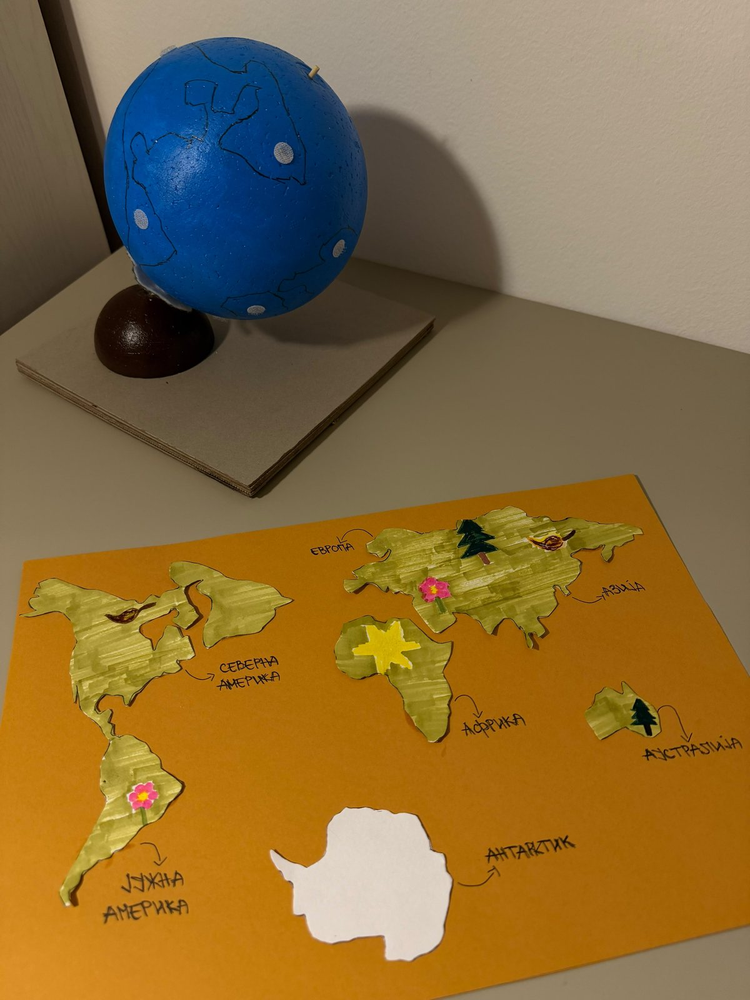
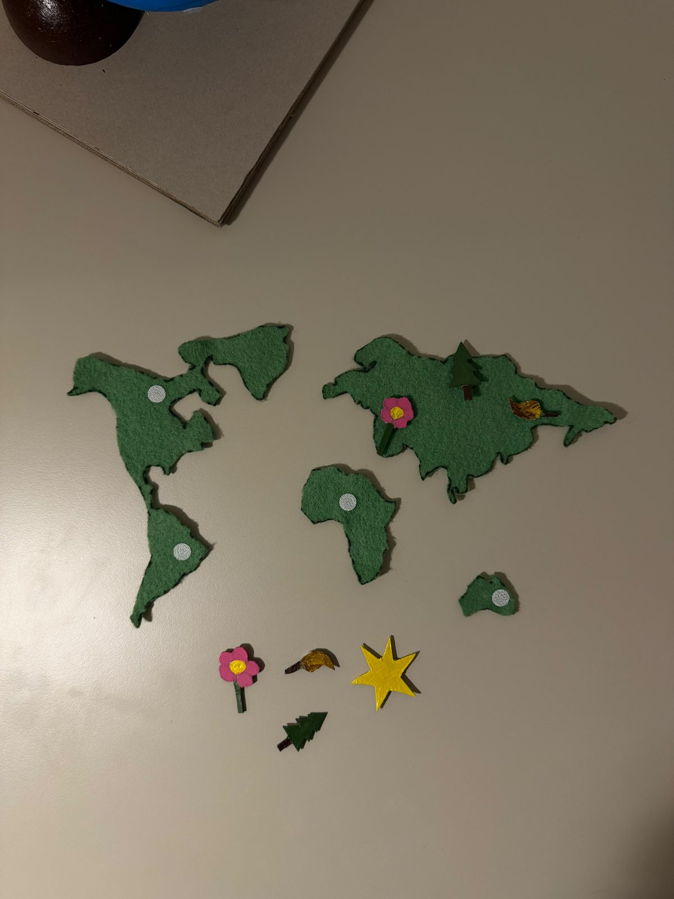
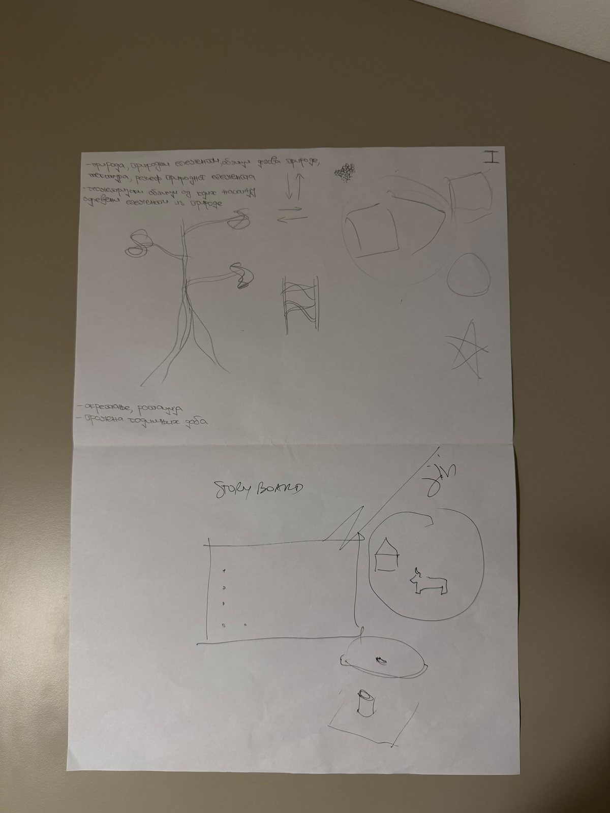
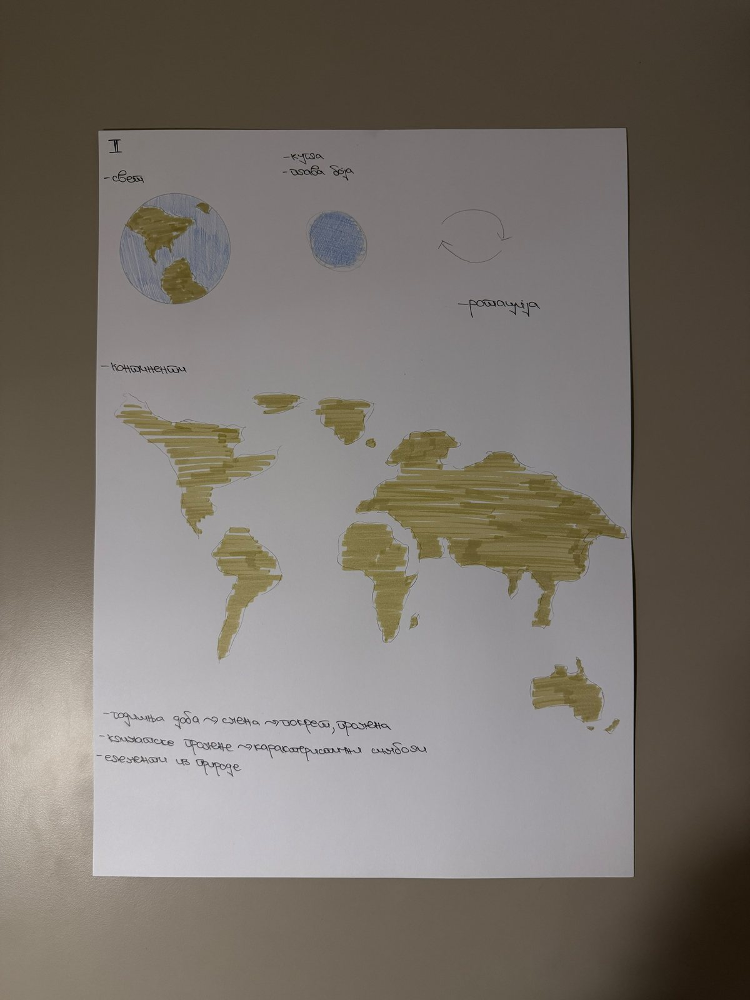
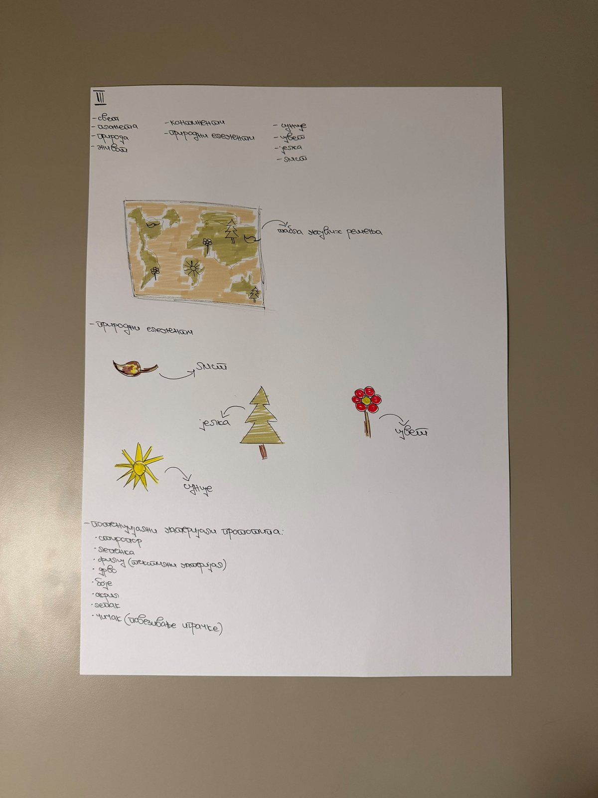
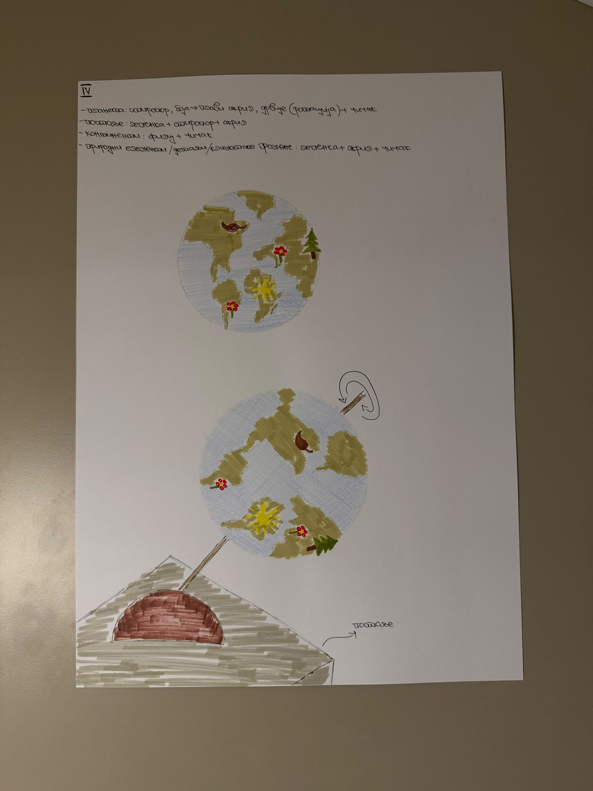

Radovi i primeri / Čas 8 / Prototip igračke
Planeta i godišnja doba
Petra Nešić94/24
Dosije: Prototip igračke
Čas 8
7 prikaza rada · Gradivo časa













Ista ruka, ostale nedelje
- Abažur — tekstilni otpad Reciklaža tekstilanedelja 8 · 3 slike · drugi dosije ovog časa
- Bez naziva Reciklaža tekstilanedelja 9 · fotografije tek stižu